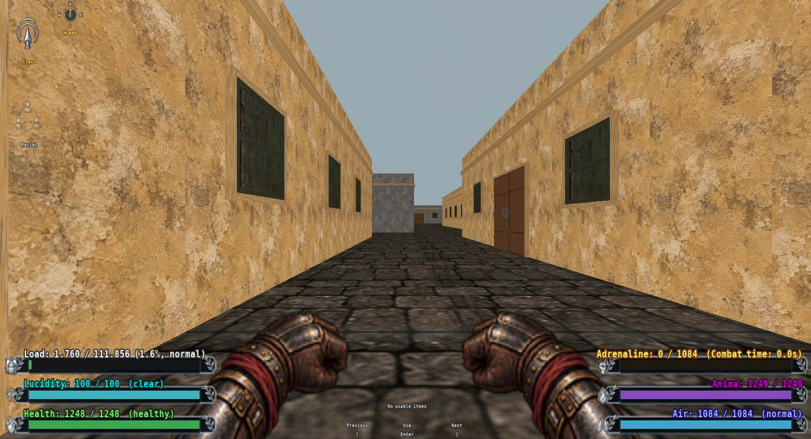
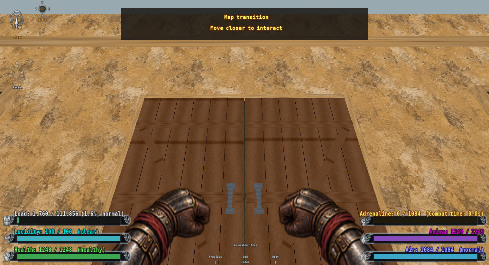
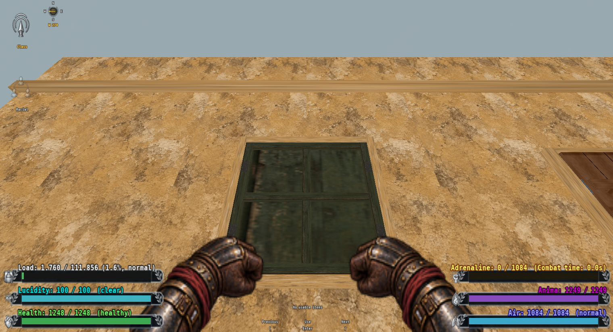
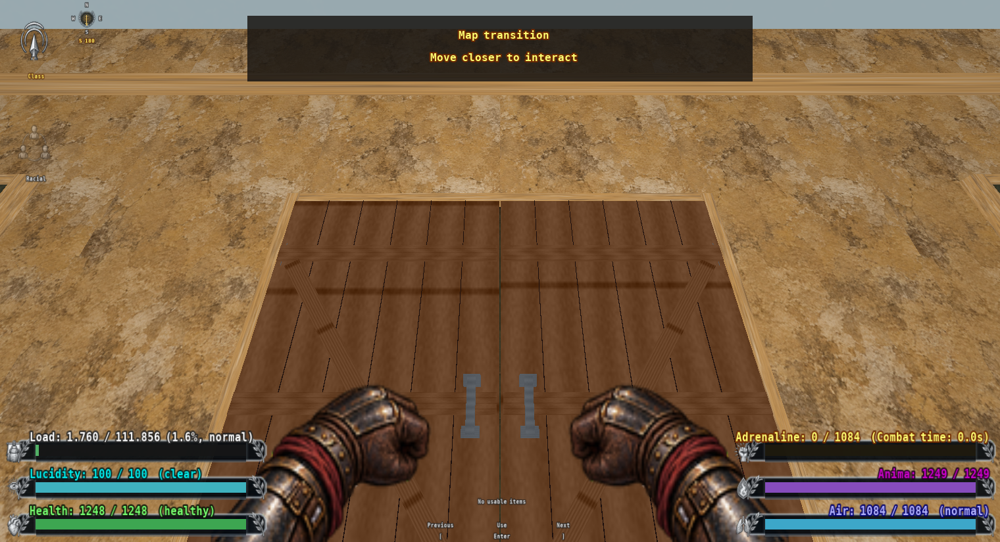
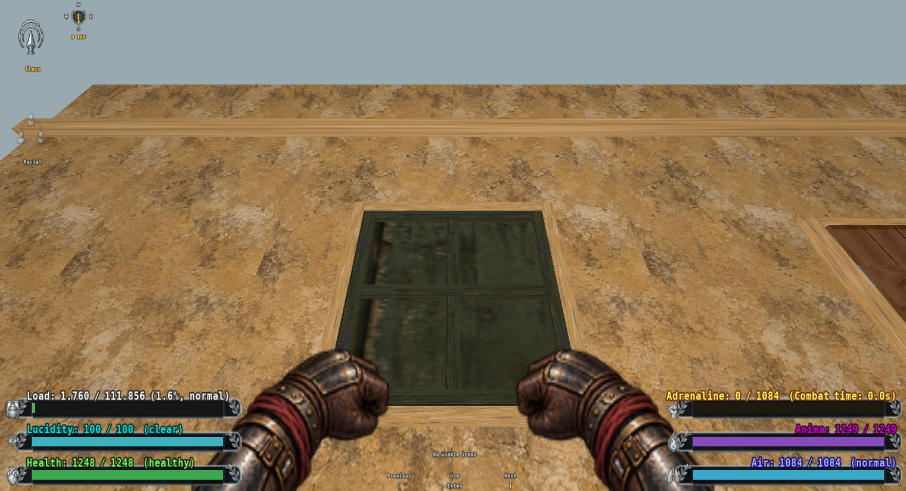
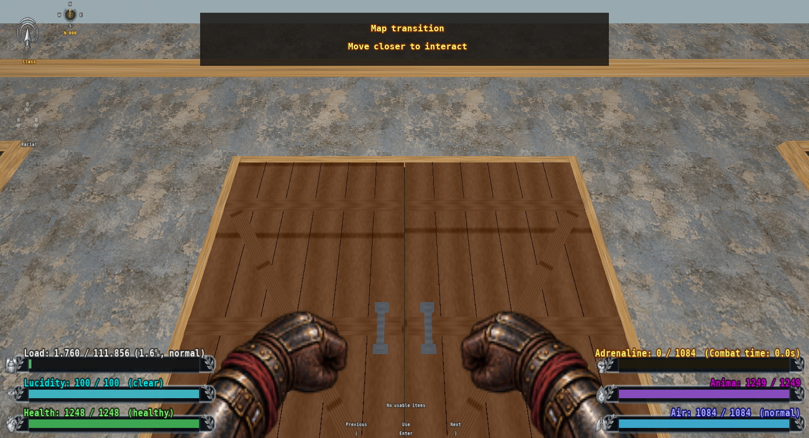
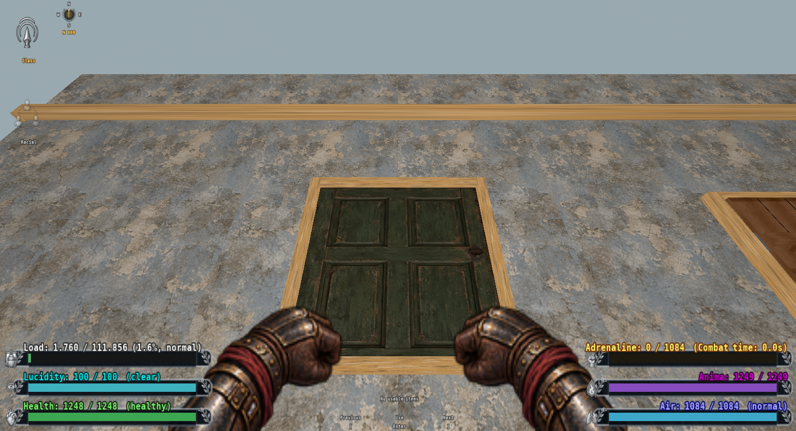
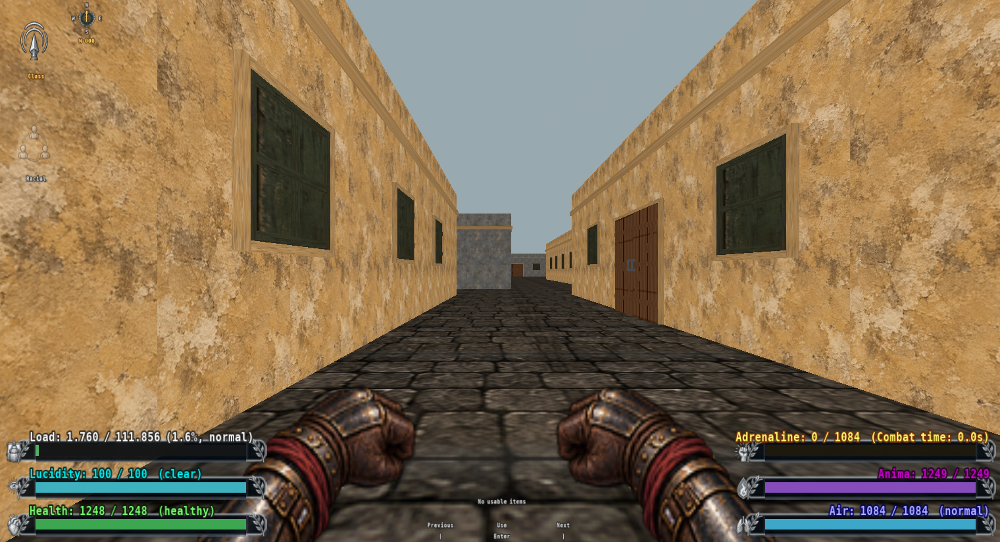

Residential Street


Opt-in proposal for the final consolidated author review: paired closed timber leaves, modeled rails/stiles and iron hinge plates on the existing opaque house windows. Original plaster frames, cornices, operational doors, passages and private interiors remain.
Existing owned green wood and painted-iron pixels are reused unchanged. Review the texture clarity at close range as well as the street silhouette. The 1876 Casa Ezeiza reference informs timber/iron construction vocabulary; this is an original artistic proposal, not a reconstruction of every 1889 house.
Proposal and provenance · Inventory and hashes · Presentation and tic tails
| Shared model | Original | Proposal |
|---|---|---|
| Vertices | 1,896 | 4,548 |
| Triangles | 948 | 2,274 |
| Native material sections | 36 | 3 |
| House instances | 160 | 160 |
| New pixel bytes | — | 0 |
The proposed mesh is 311,432 bytes and stays inside the original envelope. This inventory is not an approved permanent budget or a performance gain.
These paired views use the same private visibility adjustment on both models. The existing large facade can disappear near some houses; issue #879 owns the production fix. Teleports, invulnerability/notarget and menu dismissal are diagnostic. Images and a short walk do not establish ordinary full-city traversal or author acceptance.














The default class loses the house 19 facade at this camera. This existed before the proposed joinery. The separate operational door remains usable. The visibility correction is tracked under #879.